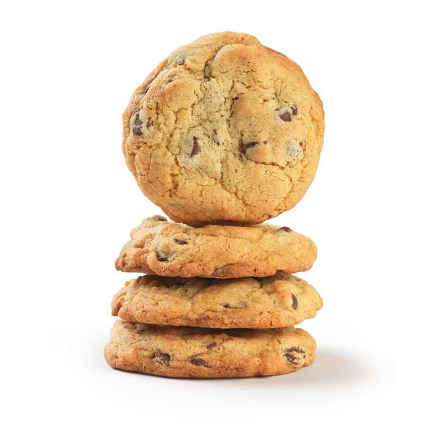
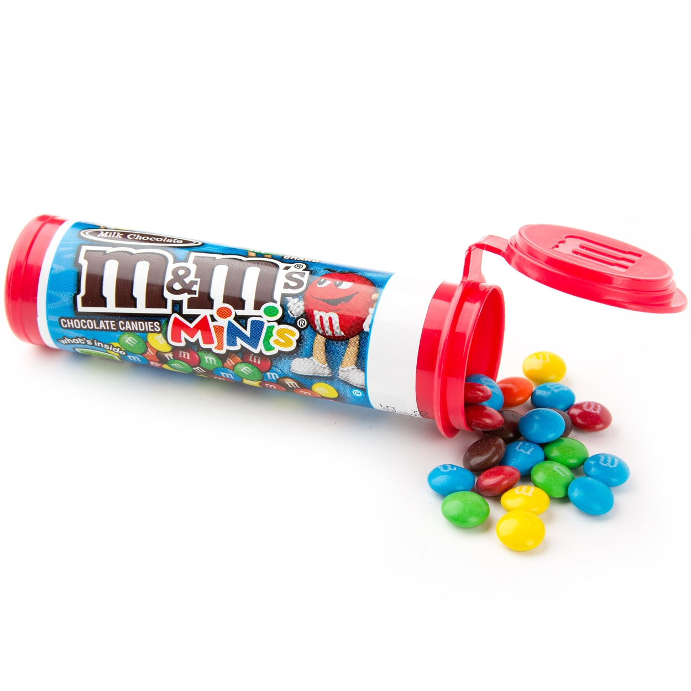
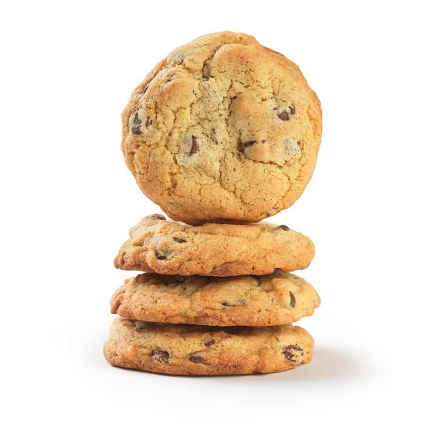
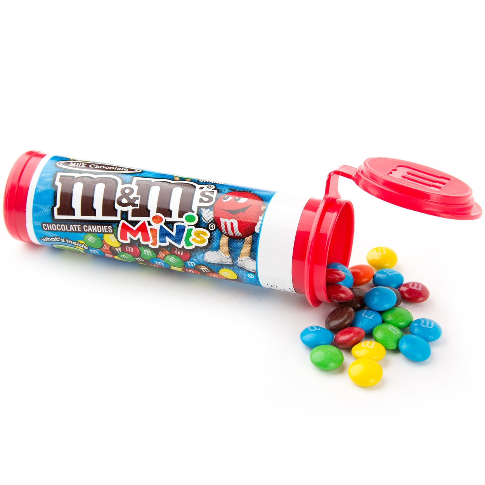

Kids and adults alike will be fighting over these big monster ice cream sandwiches! The best part about these things is that they are no bake. You don't even need to warm up your oven if you purchased cookies. Makes early to use the mini M&Ms or the large ones will fall off. As a volunteer field editor for Taste of Home magazine, I love recipes that can be assembled quickly and still make a quick presentation.
 




For more information about this recipe, please visit The Taste of Home website.